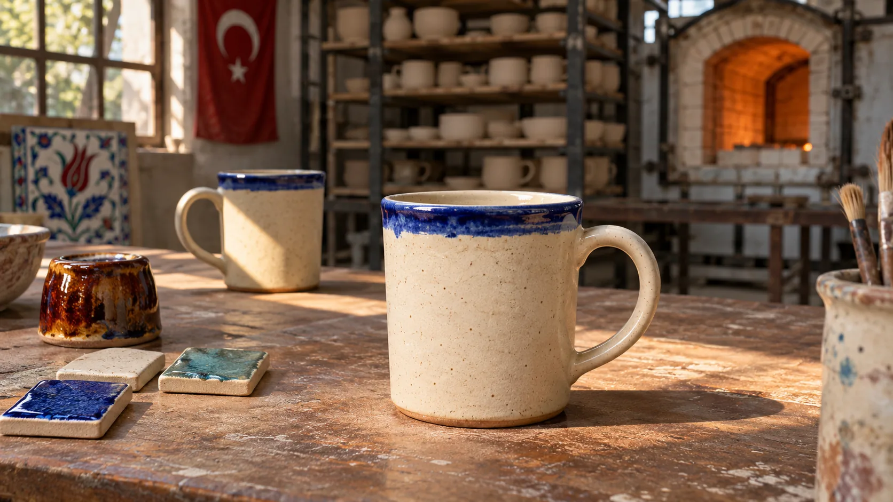

A hotel group buys blue-rimmed breakfast mugs from a workshop in Kütahya for its cafés in the European Union. The first pallet arrives with a laboratory report headed “white porcelain cup” and a signed letter saying that the crockery is suitable for catering. The buyer can recognise the shape in the photograph. What it cannot tell is whether the laboratory tested the blue decoration, who manufactured the finished mug, or which shipment the letter covers. Resolve those three questions before releasing the pallet to the hotels.
EU food contact rules apply to ordinary commercial transactions of this kind, including orders made to a buyer's design. The framework regulation addresses the safety and traceability of materials intended to touch food. The ceramics directive adds specific requirements concerning lead and cadmium migration and the written declaration accompanying the articles. The relevant question for an importer is what can transfer from the finished ware during the prescribed test. A raw pigment specification or an attractive fired sample provides only part of the answer.
Identify the kitchen article before choosing a limit
Put a production mug on the table beside the drawing. Record its depth, capacity, intended use, glaze and decoration. An ordinary deep drinking mug which is neither cooking ware nor a large storage vessel belongs in Category 2 under the ceramics directive. For this category the limits are 4.0 milligrams of lead and 0.3 milligrams of cadmium per litre. Compare each metal separately with the matching limit. Preserve the laboratory's units when transferring the figures into a purchasing summary. Losing the denominator can turn a correct result into a misleading comparison.
A saucer sold with the mug may fall in Category 1, which covers articles that cannot be filled and shallow fillable pieces with an internal depth of at most 25 millimetres. That category uses surface area rather than liquid volume. Its limits are 0.8 milligrams of lead and 0.07 milligrams of cadmium per square decimetre. Cooking ware and packaging or storage vessels above three litres have the Category 3 limits specified in the directive, with cooking ware in that category irrespective of capacity. Ask the laboratory to classify an unusual shape explicitly.
A ceramic lid creates a further trap. For a vessel fitted with such a lid the directive calls for separate testing of the vessel and the inside of the lid under the same conditions. The two extraction levels are combined and related to the vessel's area or volume as appropriate. The applicable limit is the one for the vessel. If a Turkish pottery adds a fitted lid to an existing tea mug, send the revised design to the laboratory. Keep the earlier open-mug approval identifiable as a different configuration.
Ask what the laboratory actually received
At sample selection, take photographs of the outside, lip, interior and underside. Include a scale and an identifier that will survive transport. Name the decorating workshop if a subcontractor applies the band after the body leaves the original factory. A laboratory receipt saying “one cup, cream” leaves room for disagreement. Ask the analyst to acknowledge the sample reference and photograph. Where several finishes share a report, request the explanation connecting each finish to the submitted specimen and the limits of that conclusion.
Compare the conditions recorded in the report with the directive's annexes. Ask which article was filled or exposed, what analytical method was used, and how the laboratory expressed its result for each metal. The manufacturer's or EU importer's supporting documentation must provide the analysis results, test conditions, and the testing laboratory's name and address for competent authorities on request. A single page saying “pass” may omit all four. Obtain the underlying pages, annexes and sample description while the analyst can still retrieve the file.
Consider fictional results of 0.25 milligrams per litre for lead and 0.04 for cadmium on a correctly identified Category 2 mug. Both figures sit below the corresponding directive limits. That arithmetic answers a narrow question about the submitted specimen and those two metals. It tells the buyer little about an untested metallic rim, an adhesive price sticker inside the cup, or a promise that the glaze withstands repeated industrial dishwashing. Investigate these separate questions against their own evidence and the conditions in which the hotel will use the ware.
If either value exceeds its limit, keep the affected stock on hold and obtain a technical assessment. Article 2(5) allows a particular additional-sample route when the initial excess stays within fifty per cent. It calls for at least three further matching articles, defined by shape, dimensions, decoration and glaze, and sets conditions on their average and individual results. A supplier cannot simply discard the largest number and substitute a favourable test from another collection. Give the reviewing laboratory all the results and ask it to set out the calculation.
Make the written declaration usable at the receiving dock
Article 2a requires a written declaration to accompany the ceramics through marketing stages up to and including retail, for articles which have yet to come into contact with food. The manufacturer or a seller established in the EU issues it as described in the directive. Annex III calls for the identity and address of the finished article's manufacturer and of its EU importer, identification of the ceramic article, the declaration date, and confirmation of compliance with the relevant ceramics and framework requirements. Check the national implementing rules in the intended destination.
Here the order names an Istanbul trading company, the cartons identify a Kütahya decorator, and the purchase invoice names the hotel group's procurement subsidiary in Vienna. Establish which business manufactures the finished article and which imports it into the Union. Ask for legal names and postal addresses rather than a brand mark or a salesperson's signature block. If procurement uses a separately incorporated distributor, record its actual role. A delivery address at a temporary conference venue is a poor substitute for the identity of the responsible companies.
Give the declaration an article description that a warehouse colleague can use. One workable description combines the maker's model, glazed finish, rim design and capacity with an annex listing the stock references covered. Date the annex and connect it to the signed document. Receiving staff can then distinguish the blue breakfast mug from a similarly shaped promotional giveaway. A clear correspondence between the declaration, the order acknowledgement and the carton label is often worth more operationally than another general assurance about the supplier's reputation.
Decide which changes send the file back for review
Suppose the original sample carried a narrow blue stripe below the lip. A new hotel asks the factory to extend that stripe over the drinking edge and add a gold monogram inside. A photograph of the new piece is enough to spot the change. It cannot predict migration. Ask what changed in the formulation, firing sequence and location of the decoration, then obtain a reasoned assessment of the evidence required for the altered article before accepting the production run. Agree in writing who pays for additional testing and replacement stock.
Under Annex III the declaration must be renewed when substantial production changes alter lead or cadmium migration. The trigger is tied to a change in production and its effect. The buyer can also agree commercial review dates, periodic sampling or advance notice of substitutions. Keep these contractual controls identifiable as such. A new invoice number, by itself, says nothing about chemistry. Conversely, an unchanged trading name can conceal a switch of glaze supplier or a transfer of firing to a different kiln.
Use a change request with fields for the affected model, old and proposed specification, earliest production date, stock already made, factory contact and supporting assessment. Purchasing can then choose between retaining the older specification for the current order, delaying the amended batch, or accepting an independently supported alternative. Make sure a revised purchase order reaches the decorating workshop as well as the exporter. An informal photograph approved by marketing is easy for a production supervisor to mistake for approval to ship.
Trace a complaint to the smallest defensible lot
Article 17 of the food contact framework requires systems allowing businesses to identify relevant suppliers and business customers, with information available to authorities on demand. For the hotel group, a practical chain might connect the kiln batch to the packing list, pallet, incoming delivery and the hotels that received cartons. Check it in both directions. Start once with a chipped mug at the breakfast counter and once with a decorator's warning about a particular glaze delivery. The two exercises reveal different gaps in the records.
Mixed deliveries make this difficult. Two pallets reach a regional depot on Monday, and staff open both before allocating stock to eight cafés. If cartons lose their batch labels when unpacked, a later query about the second pallet may affect all eight destinations. A simple receiving log can associate the original carton reference with each outgoing tote and delivery note. Where staff pool identical mugs in open crates, document that mixing honestly. It sets a realistic boundary on how precisely the buyer can later isolate stock.
A café manager reports a metallic taste from a new batch. Record the complaint in the customer's own words, set aside the relevant ware, and preserve accompanying packaging and delivery details. Ask how the mug was cleaned, what was served, and whether the same issue arose elsewhere. Those facts help a qualified reviewer design an investigation. They do not establish which substance, if any, migrated. Have the responsible operator assess the need for protective measures and contact with the competent authority under the applicable rules.
Set a release decision the hotel can explain
Before paying the final instalment, assemble one file containing the finished article specification, accepted design version, written declaration, laboratory evidence, shipment references and the destination review. Include correspondence explaining any differences between factory language and the terms used on the report. For instance, a supplier may call the blue finish “Aegean” while the analyst records a composition reference. A dated explanation from the producer, supported by its production records, makes those names intelligible to someone who did not negotiate the order.
Try a handover between purchasing and hospitality operations. Ask a colleague to pick a random mug from the consignment and retrieve its declaration without calling the factory. Then ask for the matching test pages and the list of hotels that received the same finish. Record the retrieval time and any assumptions they had to make. A missing sample photograph, an obsolete shared-folder link or a mismatch between corporate names can usually be fixed before the first guest receives a cup.
Consider a second order for replacement saucers after several breakages. The hospitality team prefers to reorder by diameter alone because the pieces fit its existing racks. Distinguish closely related finishes on the requisition, including a plain underglaze pattern and a transfer print applied during a later firing. Ask the buyer to attach a picture of the underside mark and the previous delivery reference. These details prevent a distributor from fulfilling the request with visually similar stock made by another workshop.
For a tender spanning several countries, divide the file by destination where requirements diverge. Ask each local operator to confirm applicable national measures and any additional contractual specifications imposed by the venue. A supermarket may insist on tighter purchasing thresholds or its own sampling plan. Identify these as customer requirements, retain the agreed edition and tell the laboratory which comparisons to report. This avoids confusion when one batch satisfies the directive figures yet misses a stricter buyer specification.
Return to the blue-rimmed pallet at the dock. If the laboratory confirms that the tested sample was entirely white, request evidence addressing the decorated version and keep the hold on the affected mugs. If the report photograph merely looked white under bright lighting, obtain the laboratory's identification and supporting sample records. Once the file joins the tested article, the written declaration and the actual consignment, the importer can record who released which stock, on what evidence, and for which intended use.
Frequently asked questions
Can a test on an unpainted cup cover a blue-rimmed order?
Identify the tested specimen and obtain evidence addressing the decoration and manufacturing conditions of the article actually delivered.
Who must be named on the declaration for imported mugs?
Annex III requires the identities and addresses of the business manufacturing the finished ceramic article and of its EU importer, together with the article details, declaration date and compliance confirmation.